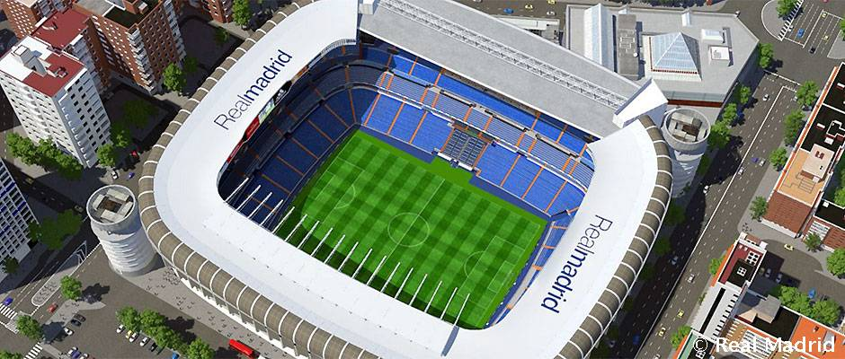

ملعب سانتياغو برنابيو (بالإسبانية: Estadio Santiago Bernabéu) هو ملعب كرة قدم يقع في وسط مدريد عاصمة إسبانيا. افتتح في 14 ديسمبر 1947 وهو ملعب ريال مدريد . يتسع الملعب حالياً لأكثر من 81 ألف مُتفرج، وهو يعد من أكبر الملاعب في إسبانيا وأوروبا. بعد افتتاحه سمي باسم ملعب شامارتين الجديد، ثم سمي باسمه الحالي تكريماً لرئيس النادي الأسطوري في ذلك الوقت سانتياغو برنابيو.
يعتبر ملعب سانتياغو برنابيو واحداً من أفضل ملاعب كرة القدم المعروفة وأكثرها تميزاً، فقد استضاف العديد من الأحداث بما في ذلك المباراة النهائية لـدوري أبطال أوروبا أربع مرات (1957، 1969، 1980، 2010)، وكذلك نهائي يورو 1964 ونهائي كأس العالم 1982. وتجرى عليه أيضاً مباريات نادي ريال مدريد في الدوري الإسباني.

يقع ملعب سانتياغو برنابيو في منطقة باسيو دي لا كاستيلانا في بلدية تشامارتين، وهو يحتل كتلة يحده شوارع باسيو دي لا كاستيلانا وشوارع إسبينا كونشا، داميان بادري، ورافائيل سالغادو.
يوم 22 يونيو 1944، منح البنك الصناعي بانكو مركانتل قرضا لكل من سانتياغو بيرنابيو و رفائييل سالغادو لشراء الأرض المجاورة لملعب تشامارتن القديم. في 5 سبتمبر 1944، تم توظيف المهندسين المعماريين مانويل مونيوز موناستيريو ولويس سولير أليماني لتصميم الملعب الجديد. في 27 أكتوبر 1944 بدأت أشغال البناء في الملعب. تم افتتاح الملعب تشامارتن الجديد (بالإسبانية: Nuevo Estadio Chamartín) في 14 ديسمبر 1947 بمباراة بين ناديي ريال مدريد الإسباني و اوس بيلينينسيس البرتغالي والتي فاز بها النادي الأبيض بـ(3-1) . وكان طاقة تحمل الملعب 74.145 متفرج، 27.645 منها مجهز بمقعد (7.125 مغطاة) 47.500 متفرج واقف. وكان سابينو باريناغا أول لاعب يسجل في الملعب الجديد.

تم التجديد في سنة 1954، بحيث أصبح يسع الملعب لما يزيد عن 125.000 متفرج، وهكذا أصبح الملعب هو الأكبر في أوروبا التي أنشئت في تلك الفترة الحديثة. بعد سنة من ذلك تم تغير اسمه إلى ملعب سانتياغو برنابيو من باب التكريم للرئيس، والذي توفي بعد ذلك سنة 1978، وفي 1957 استخدمت إدارة نادي ريال مدريد الإضاءة الكهربائية لأول مرة في المبارة الودية أمام نادي الرياضي ريسيف البرازيلي.
بعد فوز إسبانيا بشرف استضافة بطولة كأس العالم لكرة القدم سنة 1982 تم إجراء العديد من التغييرات ، وتم توظيف المهندسين المعماريين رافائيل لويس أليماني ومانويل ساليناس لمشروع ترميم الملعب. وهما اللذين نفدا المشروع الأول الأصلي بجوار مونيوز موناستيريو. واستمر العمل 16 شهر وكلفت تكلفتها 704 مليون بيزيتا، دفعت منها بلدية مدريد 530 مليون.
بعد سلسلة من الوفيات للجماهير في الثمانينيات (أبرزها ملعب هيسيل في بلجيكا وملعب هيلزبورة في إنجلترا)، أصدرت السلطات الإنجليزية تقرير تايلور عن كيفية تحسين سلامة المتفرجين في ملاعب كرة القدم الإنجليزية. وحذت حذوها اليويفا في أوروبا، واضطر الملعب لإنشاء اختصارات منفصلة لمختلف أقسام الملعب ومقاعد لكل الجماهير.
وفي تسعينيات القرن الماضي، مرّ سانتياغو برنابيو بتوسع كبير وإعادة تصميم. وقد منح مجلس إدارة رامون ميندوزا المشروع إلى شركة Gines Navarro Construcciones، SA. وقد بدأ العمل في 7 فبراير 1992 وانتهى في 7 مايو 1994 بتكلفة أخيرة تزيد على 5 مليارات بيزيتا، مما أدى إلى زيادة ديون النادي بشكل كبير، دون وجود دعم مؤسسي.
في المجموع، تم تركيب 20،200 مقعدًا مُرَقَّعًا، مع منح كل مقعد إمالة قدرها 87 درجة، مما يضمن رؤية مثالية وقربًا من الملعب. بالإضافة إلى ذلك، للوصول إلى الحلقة الجديدة أقيمت أربعة أبراج للمدخل من الخارج ، كل منها مع سلالم ومنحدر لولبي مركزي.
بعد التعديل الجديد، تم زيادة ارتفاع الملعب من 22 م إلى 45 م. وهذا تسبب في مشاكل خلال فصل الشتاء، وترك ثلثي مجال اللعب في الظل. هذا النقص في ضوء الشمس أدى إلى تدهور العشب على أرض الملعب. لهذا السبب، تم تركيب شبكة أنابيب البولي بروبلين على عمق 20 سم تحت الملعب. على مدى أكثر من 30 كم، يقوم نظام الأنابيب بتدوير الماء الساخن، مع الحفاظ على العشب من التجمد في درجات الحرارة الباردة.
ونظرا لارتفاع المدرجات الجديدة، كان من الضروري تحسين وزيادة القدرة على الإضاءة. كما تم تركيب سقف حماية قابل للسحب لحماية الجماهير. ووصلت سعة الملعب بعد التجديد إلى 110،000 متفرج.
بالفعل في صيف عام 1998، وبرئاسة لورينزو سانز، تبنى ترتيبات جميع مقاعد سانتياجو بيرنابيو، ليصل قدرتها الإجمالية إلى 75328 متفرج.
سمي ملعب ريال مدريد بهذا الاسم تخليدًا لذكرى أهم شخصية في تاريخ ريال مدريد سانتياجو بيرنابيو حيث كان هو اللاعب ثم المدرب ثم الرئيس للنادي الملكي. وتعتبر كذلك فترة رئاسته هي الفترة الأطول في تاريخ الريال حيث بلغت 35 سنة من 1943 إلى 1978 كما أنها الفترة الذهبية في تاريخ نادي ريال مدريد حيث تعتبر فترة رئاسته أكثر الفترات التي تمكن فيها الريال من حصد لقب الدوري الإسباني (لاليجا La Liga) حيث حصد 16 لقباً في 35 سنة مع العلم بأن الريال هو أكثر الفرق الإسبانية حصدًا للقب الدوري بـ33 لقباً أولها موسم 1931-1932 وآخرها كان في موسم 2016/2017.